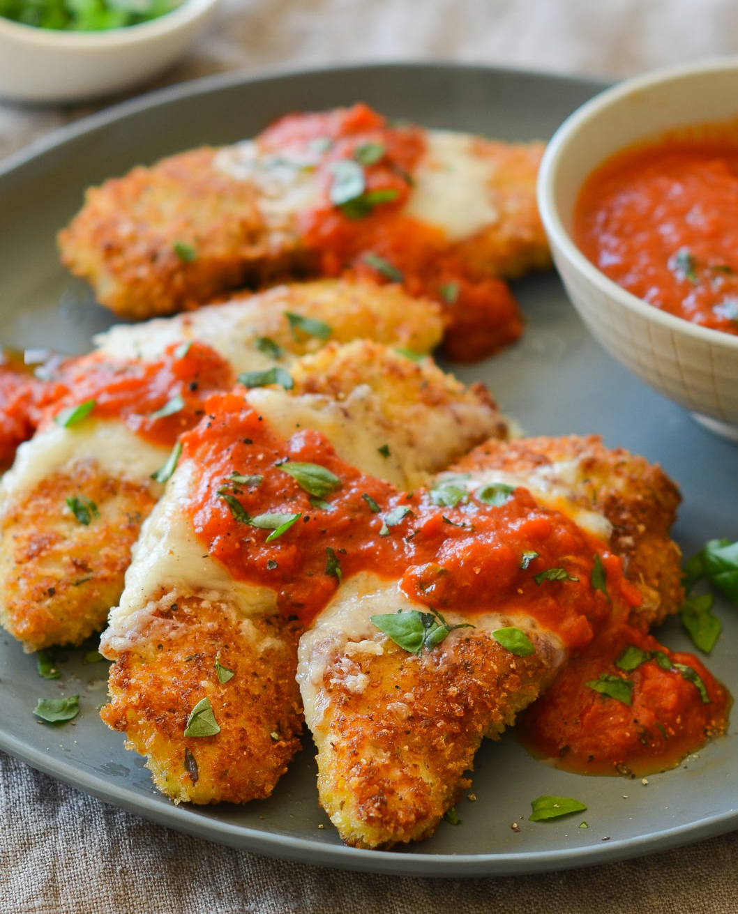

Baked Parmesan Chicken

Description
I came up with this recipe when I had no bread crumbs but had Parmesan
cheese. I decided to try olive oil instead of egg to dip the chicken in.
I love how the cheese melted down over the chicken and it had a wonderful
flavor.
Ingredients
- 1/3 cup olive oil
- 1 cup grated parmesan cheese
- 1 tsp celery salt
- 1 tsp garlic powder
- 8 boneless, skinless chicken thighs
Steps
- Preheat the oven to 375 degrees F (190 degrees C). Line a jelly roll pan with foil.
- Put olive oil in a shallow bowl. Mix together Parmesan cheese, celery salt, cayenne pepper, and garlic powder in another shallow bowl.
- Cut chicken thighs in half. Dip chicken pieces in olive oil so both sides are covered, then press one side in the Parmesan mixture until coated. Place on the prepared pan with the coating facing up.
- Bake in the preheated oven until chicken is no longer pink in the center and the juices run clear, about 25 minutes. An instant-read thermometer inserted into the center should read at least 165 degrees F (74 degrees C).